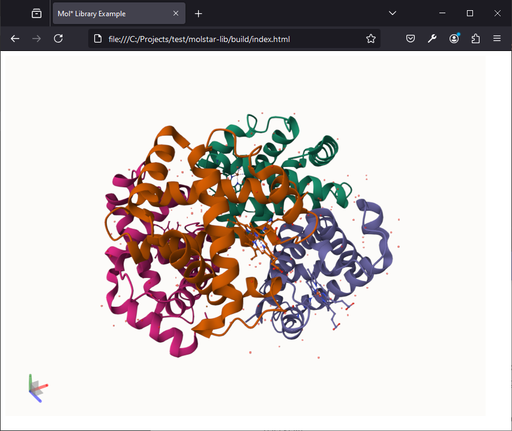
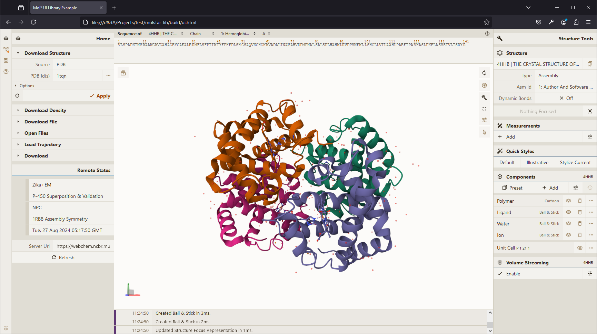

Building a Custom Library
This page goes over creating a custom Mol* based library usable inside a <script> tag in an HTML page.
Setup
- Create a new npm/yarn package
- Install
molstarandesbuildpackages
mkdir molstar-lib
cd molstar-lib
npm init
npm install molstar
npm install esbuild --save-dev
Example Library Code
Create new file src/index.ts (or .js if you don't want to use TypeScript):
import { DefaultPluginSpec, PluginSpec } from 'molstar/lib/mol-plugin/spec';
import { PluginContext } from 'molstar/lib/mol-plugin/context';
export async function initViewer(element: string | HTMLDivElement, options?: { spec?: PluginSpec }) {
const parent = typeof element === 'string' ? document.getElementById(element)! as HTMLDivElement : element;
const canvas = document.createElement('canvas') as HTMLCanvasElement;
parent.appendChild(canvas);
const spec = options?.spec ?? DefaultPluginSpec();
const plugin = new PluginContext(spec);
await plugin.init();
plugin.initViewer(canvas, parent);
return plugin;
}
export async function loadStructure(
plugin: PluginContext,
url: string,
options?: { format?: string, isBinary?: boolean }
) {
const data = await plugin.builders.data.download(
{ url, isBinary: options?.isBinary }
);
const trajectory = await plugin.builders.structure.parseTrajectory(
data,
options?.format ?? 'mmcif' as any
);
const preset = await plugin.builders.structure.hierarchy.applyPreset(trajectory, 'default');
return preset;
}
Building the Library
Add new commands to the scripts section of the package.json file
"scripts": {
"build": "esbuild src/index.ts --bundle --outfile=./build/js/index.js --global-name=molstarLib",
"watch": "esbuild src/index.ts --bundle --outfile=./build/js/index.js --global-name=molstarLib --watch"
}
and run the command npm run build (or watch for interactive development experience). This will create build/js/index.js file which can be imported with a <script> tag and the exported functions called view the molstarLib prefix (you can customize this parameter).
Using the Library
Create file build/index.html:
<!DOCTYPE html>
<html lang="en">
<head>
<meta charset="utf-8" />
<meta name="viewport" content="width=device-width, user-scalable=no, minimum-scale=1.0, maximum-scale=1.0">
<title>Mol* Library Example</title>
</head>
<style>
#viewer {
position: absolute;
width: 800px;
height: 600px;
}
</style>
<script type="text/javascript" src="./js/index.js"></script>
<body>
<div id="viewer"></div>
<script type="text/javascript">
async function init() {1
const plugin = await molstarLib.initViewer("viewer");
await molstarLib.loadStructure(
plugin,
"https://models.rcsb.org/4hhb.bcif",
{ isBinary: true }
);
}
init();
</script>
</body>
</html>
After opening index.html in a browser, you should see

Using Mol* React UI
The above example does not make use of the default Mol* React UI and any UI components are therefore the author's responsibility. The below examples show how to (re)use the Mol* React UI.
- Create
src/ui.tsx:import React from 'react'; import { createRoot } from 'react-dom/client'; import { DefaultPluginUISpec, PluginUISpec } from 'molstar/lib/mol-plugin-ui/spec'; import { PluginUIContext } from 'molstar/lib/mol-plugin-ui/context'; import { Plugin } from 'molstar/lib/mol-plugin-ui/plugin'; export async function initViewerUI(element: string | HTMLDivElement, options?: { spec?: PluginUISpec }) { const parent = typeof element === 'string' ? document.getElementById(element)! as HTMLDivElement : element; const spec = { ...DefaultPluginUISpec(), ...options?.spec }; const plugin = new PluginUIContext(spec); await plugin.init(); createRoot(parent).render(<Plugin plugin={plugin} />) return plugin; } export async function loadStructure(plugin: PluginUIContext, url: string, options?: { format?: string, isBinary?: boolean }) { const data = await plugin.builders.data.download({ url, isBinary: options?.isBinary }); const trajectory = await plugin.builders.structure.parseTrajectory(data, options?.format ?? 'mmcif' as any); await plugin.builders.structure.hierarchy.applyPreset(trajectory, 'default'); } - Create
src/style.scss:@import '../node_modules/molstar/lib/mol-plugin-ui/skin/light.scss'; -
Create
build/ui.html:<!DOCTYPE html> <html lang="en"> <head> <meta charset="utf-8" /> <meta name="viewport" content="width=device-width, user-scalable=no, minimum-scale=1.0, maximum-scale=1.0"> <title>Mol* UI Library Example</title> </head> <link rel="stylesheet" type="text/css" href="css/style.css" /> <style> #viewer { position: absolute; inset: 0; } </style> <script type="text/javascript" src="./js/ui.js"></script> <body> <div id="viewer"></div> <script type="text/javascript"> async function init() { const plugin = await molstarLib.initViewerUI("viewer", { spec: { layout: { initial: { isExpanded: true, showControls: true, }, }, } }); await molstarLib.loadStructure(plugin, "https://models.rcsb.org/4hhb.bcif", { isBinary: true }); } init(); </script> </body> </html> -
Install
sass:npm install sass -save-dev(or useesbuildplugin andimportthe scss file inui.tsx) - Add scripts to
package.json:"build-ui": "esbuild src/ui.tsx --bundle --outfile=./build/js/ui.js --global-name=molstarLib", "css": "sass src/style.scss ./build/css/style.css" - Run
npm run build-uiandnpm run css(skip if usingesbuild-sass-plugin) - Opening
build/ui.html: